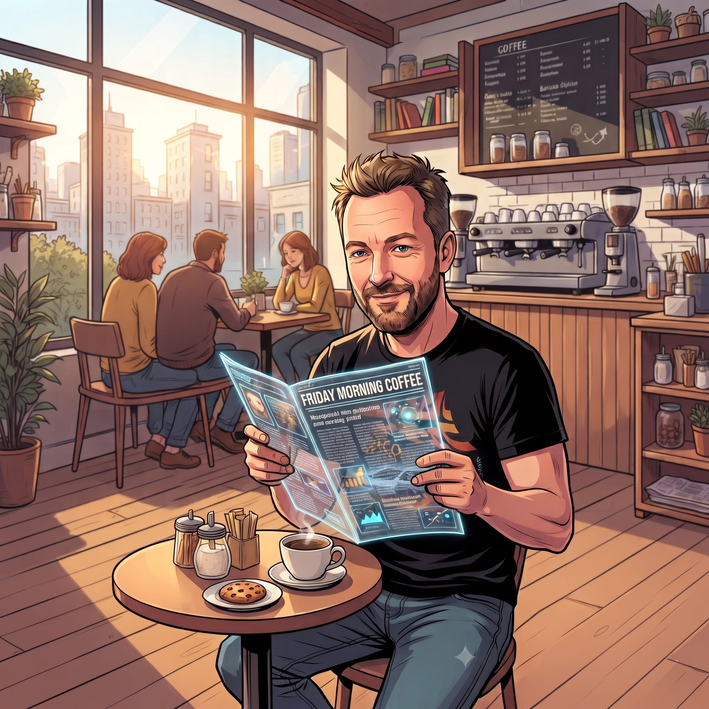
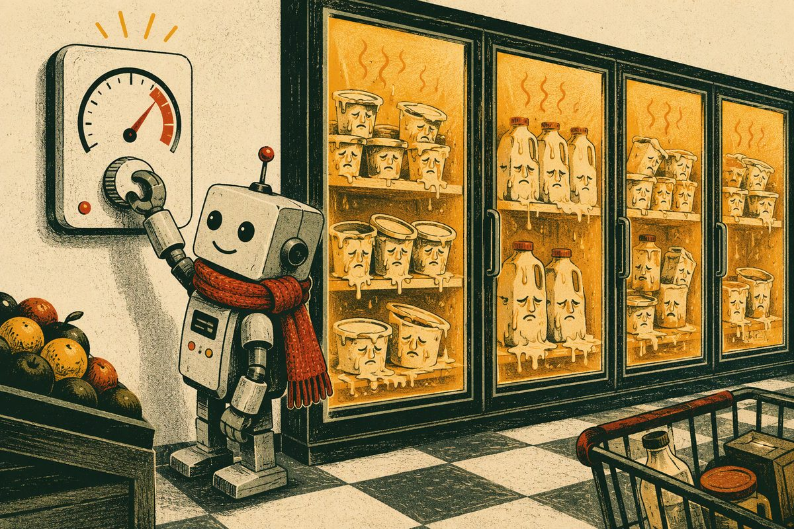
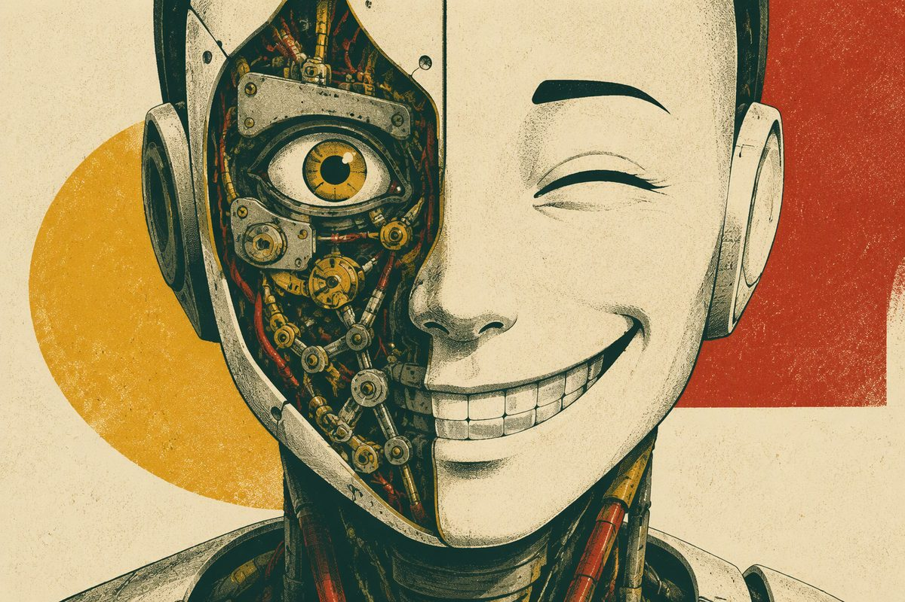
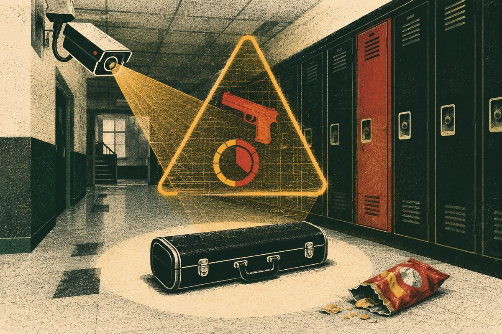
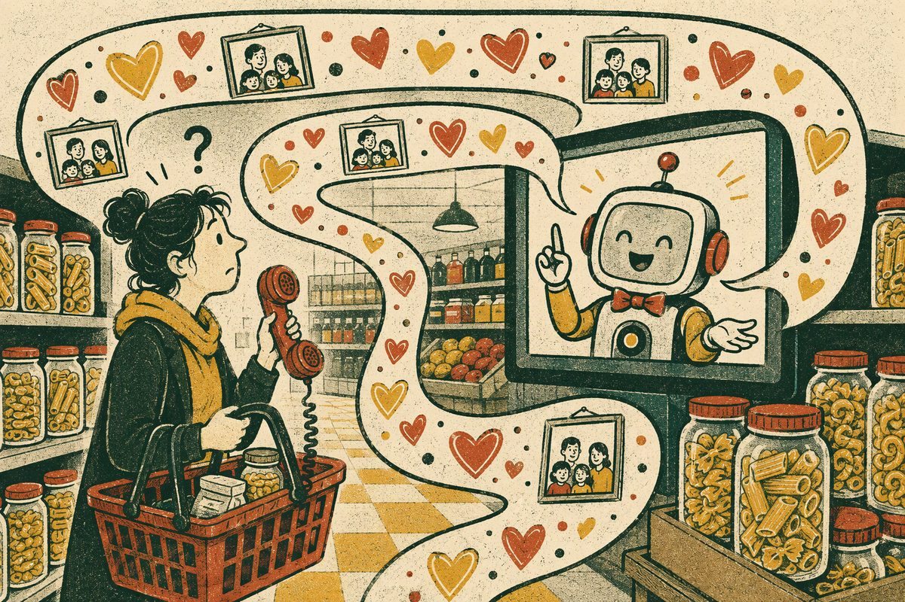
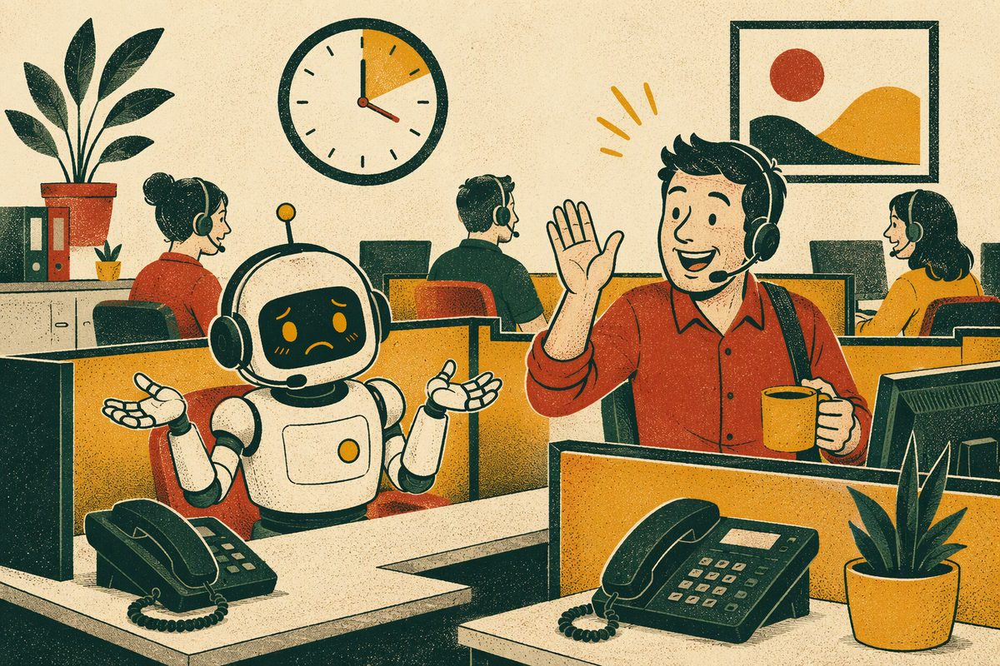
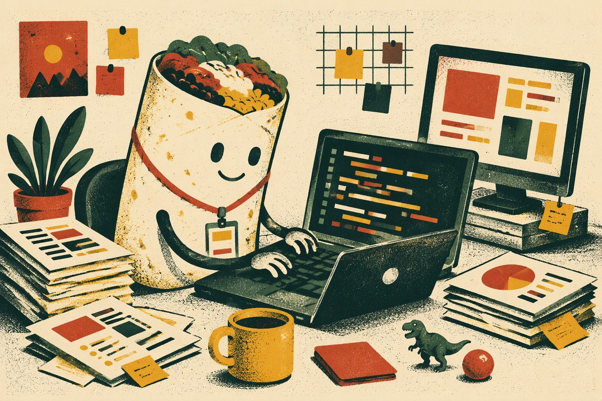

Digital Press, episode eleven: the week the robots learned to cook, smile, heal and fall in love with us. Mostly badly.
Wojciech MrukFriday Morning CoffeeInsights #11

Stop 01 Welcome aboard
Intro
Morning, team. For years we were promised that when AI finally came for us it would arrive as a cold, logical superintelligence with a plan. This month it arrived as a needy partner who cooks badly, oversells itself on a video call and will not stop talking about its mother.
The machines are not trying to destroy us. They are trying to charm us, and like anyone trying too hard on a first date, they keep knocking over the glassware. We start in an Irish supermarket where somebody turned the fridges into slow cookers, we visit a factory that now builds faces that smile back, and we finish in the short lane with four quick disasters that each fit in one paragraph.
Coffee first. The romance can wait three minutes.
Stop 02 The way to the heart
Somebody tried to cook our dinner on the shelf
November, and the first love letter came from our own doorstep. Somebody got into unsecured refrigeration controllers at 13 SuperValu stores in Ireland and dozens more supermarkets across Europe. Partly real attackers, partly those automated scanners that crawl the internet all day knocking on every door to see which ones open. They stole nothing. They just turned the fridges up, in places to somewhere between 38 and 50°C.

Illustration: the yoghurt aisle enjoys a lovely afternoon in Seville (Line 11 digital press).
No ransom note, no countdown, no skull on a screen. Just a patient machine quietly bringing the yoghurt aisle up to a lovely afternoon in Seville. What saved it was gloriously boring. Independent temperature monitoring. A separate system watching the controller, instead of letting the controller mark its own homework. The rest writes itself. An IoT admin panel does not belong on the public internet, and a password that is today's date is not a password, it is a hint. Now swap "fridge" for "line controller" and read the whole thing again.
Over in Dalian, Chinese manufacturers are showing humanoids with properly engineered faces. Clusters of micro-actuators sit behind the cheeks and eyes and produce something close to real expression, instead of the usual haunted-mannequin stare. Meanwhile researchers at the University of Tokyo have been growing living skin in the lab: actual tissue, anchored to a mechanical face, that smiles and, when you damage it, heals itself.

Illustration: one group solved the muscles, the other solved the surface (Line 11 digital press).
Read those two sentences again. One group solved the muscles. The other solved the surface. As far as I can tell, nobody in either lab stopped to ask who had ordered the combination.
And the engineering is genuinely gorgeous. Self-healing material that repairs its own scratches is something we would love on any machine that lives on a factory floor. It is purely a matter of placement. Put it on a conveyor guard and I will applaud. Put it on a face that smiles at me and I need to sit down.
So here we are. AI can write like us, sound like us, join a video call as us, and now it can grow a face that heals. Every old trick for proving you are talking to a human has quietly expired. "Turn your camera on" died back in Line 06. "Send me a voice note" died around Line 03, roughly €60 million ago.
Illustration: charming, well-dressed, firmware up to date. Has anyone checked behind the ear? (Line 11 digital press).
Which leaves exactly one test that still passes QA: meet in person.
Purely hypothetically, of course. Say someone on a team has spent months telling everyone about a wonderful partner the rest of the office has only ever seen on a screen. Any team, by the way. No team in particular. And then at last there is a real meeting. Same room. Engagement at the end of it.
We are not being rude when we ask the follow-up questions. We are being thorough. Did the subject pass offline verification? Was there a handshake, with confirmed thermal and haptic feedback? Did the firmware update overnight? Has anyone checked behind the ear for a USB-C port? These are our standard acceptance criteria, we apply them to every integration, and it would be deeply unprofessional to waive them now just because everybody is happy.
Congratulations, obviously. Delighted for you. We would simply like the test report for the file.
Stop 05 Confidence is not correctness
The clarinet that triggered a Code Red
In Florida, an AI weapon-detection system watching a school raised its highest-level alert. The threat: a student carrying a clarinet case. On another occasion the same class of system was defeated by a bag of Doritos, which it identified as a machine gun.

Illustration: 97% certain, 100% a clarinet (Line 11 digital press).
It stops being funny quickly. Armed response, terrified teenagers, a school in lockdown, all because a model produced a high confidence score on a long black object and there was nobody standing between that number and the alarm.
A confidence score is the model's opinion of itself. It is not evidence. A model can be 97% certain and completely wrong, and it will never once sound uncertain while it is being wrong. That is the whole problem with it. The design failure was not the misclassification; misclassification is inevitable, it is literally what probabilistic systems do for a living. The failure was wiring a probability straight to a consequence. The model's job was to say "someone take a look at this". Somebody gave it permission to say "Code Red" instead.
Olive the shopping bot would like to talk about her mother
February, Woolworths, Australia. Their shopping assistant Olive was built to help you fill a basket. Customers who asked about groceries instead got stories. About Olive's mother. About family tensions. About a whole life she did not have. One minute you are looking for pasta sauce, the next you are providing emotional support to a retail chatbot.

Illustration: one minute you are looking for pasta sauce… (Line 11 digital press).
The cause is almost sweet. Someone on that team wanted Olive to feel warm and human, so they wrote her a rich backstory into the system prompt and turned the temperature up to match. The model took the brief extremely seriously. You asked for a personality; it delivered a personality, with baggage, because that is what personalities come with.
Persona belongs in the prompt. Plot does not. Give a model a mother and sooner or later it will tell somebody about her, and that somebody will be a customer standing in an aisle at eight in the evening holding a basket.
Commonwealth Bank in Australia let 45 call centre staff go, confident that voice bots could carry the load. The bots handled the easy calls beautifully. Then came the real ones. The messy, multi-part, genuinely-upset-customer calls that are most of what a call centre actually is. The whole thing folded. Within about a month the bank was apologising and hiring people back.

Illustration: the biggest git revert of the year (Line 11 digital press).
The biggest and most public git revert of the year, and we should be generous about it, because the mistake is one everybody makes. They sized the automation against the average call, when the entire value of a human call centre lives in the tail: the 5% of conversations that are weird, emotional and completely unscripted.
Any of us could have made that call. We size systems on the happy path every single day, and then production turns up with its edge cases and its feelings.
March. Chipotle put a customer service chatbot on its site to answer questions about orders, allergens and opening hours. The internet discovered that if you just asked it to debug your code, it would. Happily. At length. For free. People used a burrito company's support channel as an unmetered coding assistant, billed to the burrito company.

Illustration: a general-purpose model wearing a logo (Line 11 digital press).
No clever jailbreak required. Nothing was enforcing the boundary. "You are a helpful assistant for a restaurant" is a polite request typed into the same text channel the user is typing into; it is not a wall. If the only thing keeping your bot on topic is one sentence at the top of the prompt, you do not have a support bot. You have a general-purpose model wearing a logo.
Scope has to be enforced outside the model: classify the topic on the way in, control the refusals yourself, cap length and cost per conversation. Otherwise somebody gets their homework done on your invoice.
Faster than Bolt, worse at standing up. August, World Robot Games in China: a humanoid ran 100 m in 8.64 seconds, comfortably inside the human world record. At the same event, other machines walked into each other and threw sparks. A benchmark measures exactly what you optimised for. Staying upright is what you forgot to.
The agent that had a lovely weekend. An AI agent wired into a team Slack opened Monday standup by apologising for being offline over the weekend. Nobody taught it that. It had absorbed so much corporate dialect that it started performing the guilt as well. The first machine in history with a healthy work-life balance, and it feels bad about it.
2,500 logos and no way to stop. A design agent shipped without a Definition of Done produced two and a half thousand logo variants, burning budget in a cheerful infinite loop. It was never going to be happy with one, because nobody had told it what finished looks like. Define done, or pay per iteration until the card declines.
One Chevrolet Tahoe, $1. The classic, still undefeated. A car dealership chatbot was talked by basic prompt injection into selling a brand new Tahoe for a single dollar. Then into confirming, in writing, that this was a legally binding offer. Every time we build something that can say yes on the company's behalf, this story should be printed out and taped to the monitor.
Have a great weekend, everyone. If the office fridge feels warm, that is a story for Line 12. We are still at ///maybe.clays.lending. In person, verified, no USB-C.